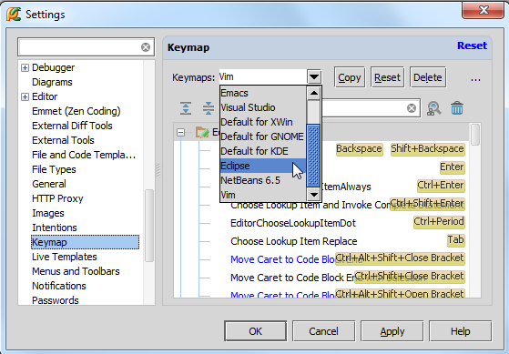
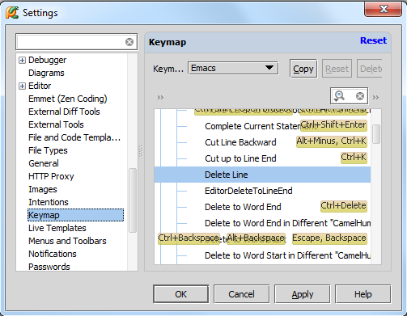
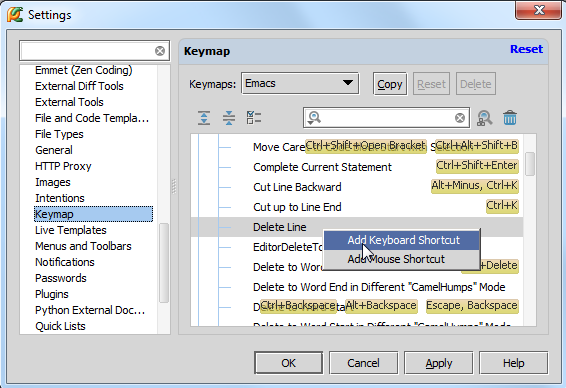
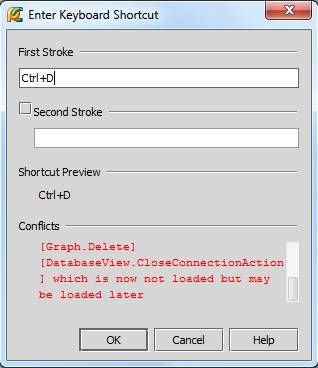
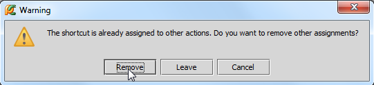
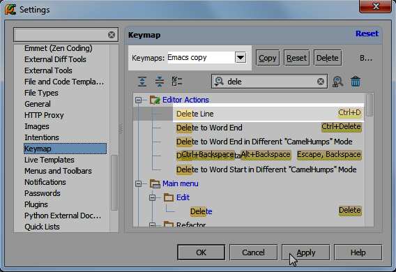

最全Pycharm教程（4）——有关Python解释器的相关配置
1、主题
毫无疑问Pycharm是一个具有强大快捷键系统的IDE，这就意味着你在Pycharm中的任何操作，例如打开一个文件、切换编辑区域等，都可以通过快捷键来实现。使用快捷键不仅能提高操作速度，看起来也会非常酷。然和，如果你已经习惯使用一些快捷键方案，你的手指就会习以为常，改变起来就比较困难。这部分教程即是介绍如何根据你的习惯来量身定制Pycharm快捷键设置，使你用起来得心应手。
对于基本的快捷键的组合、用法这里不再赘述，详情可参考Configuring keyboard shortcuts或者 Keymap。
2、选择一个快捷键配置方案
这一步非常简单，在主工具栏中单击设置按钮，在设置对话框中单击 Keymap。
在对应页面的下拉列表中选择一个快捷键配置方案：

单击应用保存更改。例如我们这里选择了Eclipse方案，因此删除一行的快捷键就是我们所习惯的Ctrl+D了。
3、改变快捷键配置方案。
在这里我们介绍如何改变快捷键的配置方案。
设想一下情况：你选择了Emacs方案的快捷键配置，但这个配置方案里面并没有预先定义好如何通过快捷键来实现删除一行：

假设你希望将这个功能指定快捷键为Ctrl+D，操作如下：
（1）在主工具栏中单击设置按钮，在设置对话框中单击 Keymap。
（2）在对应下来列表中选择Emacs。
（3）在下方的快捷键功能列表中，展开Editor Actions节点，定位到Delete Line功能。
（4）右击，在快捷菜单中选择Add Keyboard Shortcut

（5）在打开的 Enter Keyboard Shortcut窗口的First Stroke中输入你想要的快捷键组合：

需要注意的一点是，在输入预期的快捷键时，所有来自键盘的输入都会被识别为用户的快捷键设置，举个例子，如果你想设置一个快捷键组合Ctrl+D，则需要一次按下Ctrl和D键。
如果你按错了键，你只能使用鼠标指针来删除错误的输入，因为此时来自键盘的输入Backspace 也会被系统认定为一个快捷键设置。
（6）接下来需要注意系统的警告提示：这个Ctrl+D的快捷键组合已经存在，说明Pycharm已经将这个快捷键组合关联到别的设置中去了，好在之前的设置并不常用，可以将它替换掉，因此单击OK确定。
在替换时Pycharm会给出警告提示：

（7）再次浏览一下设置好的快捷键方案：

你将会发现此时的配置方案自动更名为Emacs copy。这是因为Pycharm并不允许用户更改其预定义好的快捷键配置方案，只能更改其拷贝文件。单击应用并关闭对话框。
最后测试一下我们的更改是否生效。打开一个py文件，将光标定位到待删除行，按下Ctrl+D，该行代码顺利删除，设置更改成功。